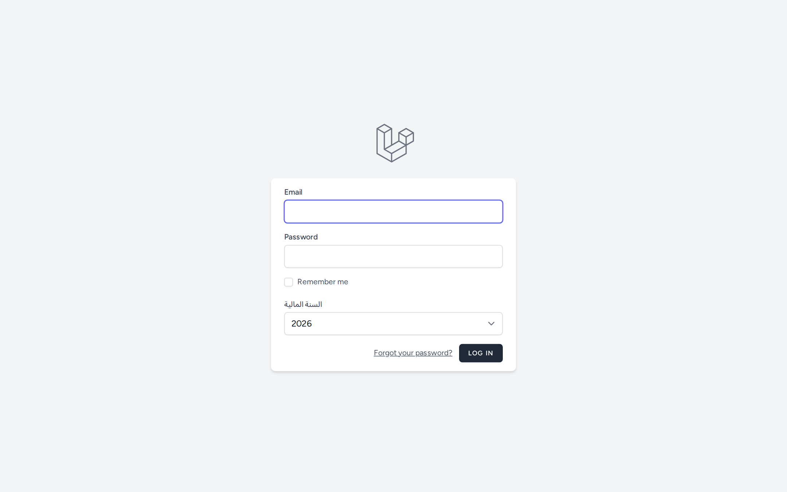

1. تسجيل الدخول
- افتح رابط النظام في المتصفح؛ تظهر صفحة تسجيل الدخول.
- أدخل البريد الإلكتروني (Email) وكلمة المرور (Password).
- اختر السنة المالية التي تريد العمل عليها من القائمة المنسدلة.
- اختيارياً فعّل تذكرني (Remember me) ليبقى دخولك محفوظاً على هذا الجهاز.
- اضغط زر تسجيل الدخول (LOG IN).

صفحة تسجيل الدخول: حقول البريد وكلمة المرور، خانة «تذكرني»، قائمة «السنة المالية»، وزر «تسجيل الدخول».
المخرجات المتوقعة: عند نجاح الدخول يتم تحويلك إلى لوحة التحكم. وإن كان دورك لا يملك صلاحية لوحة التحكم تُحوَّل إلى صفحة الملف الشخصي. وعند خطأ البيانات تظهر رسالة تنبيه أعلى النموذج.
2. نسيت كلمة المرور
- في صفحة الدخول اضغط رابط Forgot your password?.
- أدخل بريدك الإلكتروني واطلب رابط إعادة التعيين.
- افتح بريدك واتبع الرابط لتعيين كلمة مرور جديدة.
المخرجات المتوقعة: يصلك بريد يحتوي على رابط لإعادة تعيين كلمة المرور.
3. التنقّل بين أقسام النظام
بعد الدخول، يظهر شريط تنقّل علوي يحتوي على القوائم الرئيسية (تظهر حسب صلاحياتك):
- لوحة التحكم
- الشحنات (قائمة منسدلة): الشحن الدولي البحري، الشحن الدولي البري، الشحن المحلي البري.
- البيانات الجمركية
- التقارير (قائمة منسدلة)
- إدارة المستخدمين (قائمة منسدلة): المستخدمون، الأدوار، الصلاحيات.
- الإعدادات (قائمة منسدلة): الخطوط الملاحية، المنافذ، مجموعات الشحن، الشركات، الأقسام، أنواع/حالات الشحنات، المستندات، مراحل الشحن، المخازن.
- قائمة المستخدم (أعلى اليسار): إعدادات النظام، سجل النظام، الملف الشخصي، تسجيل الخروج.
السنة المالية: يعرض النظام بيانات سنة مالية واحدة في كل مرة. تختارها عند الدخول ويمكن تبديلها لاحقاً، وكل القوائم والأرقام تتبع السنة المختارة.
4. تسجيل الخروج
- اضغط على اسمك/صورتك في أعلى يسار الشريط العلوي.
- اختر تسجيل الخروج (Log Out).
المخرجات المتوقعة: يتم إنهاء الجلسة وإعادتك إلى صفحة تسجيل الدخول.